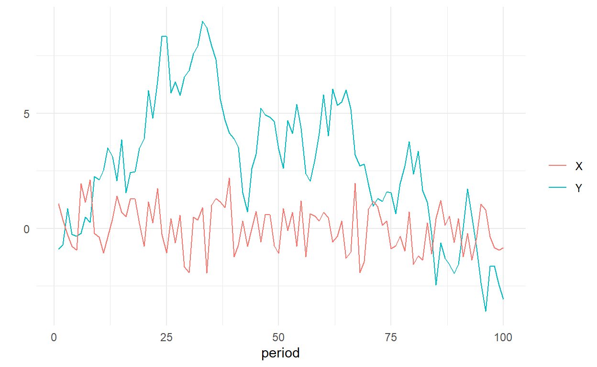
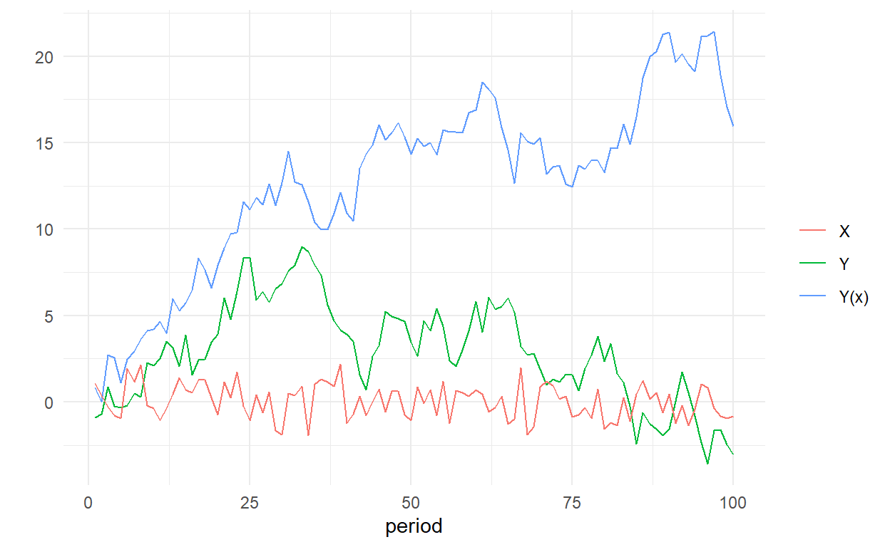

When dealing with time series we have to account for the possibility that the observations in our data are correlated from one observations to the next; e.g. if we see a particularly high value in one period we can also expect a higher value in the next period.
One of the simplest possibilities is a so called autoregressive model with one lag; i.e. \[y_t=\beta_0+\beta_1 y_{t-1}+\epsilon_t \tag{1}\] Hence, this is like the normal linear regression model except that one of our explanatory variables is the dependent variable in the previous period. In principle we can estimate that like any other regression model; i.e. with OLS using the lm() command in R.
However, this goes wrong if \(\beta_1\) gets too big; i.e. if it is equal or larger than 1 or smaller than -1 (i.e. \(|\beta_1|>1\)). This is also referred to as the times series having a “unit root”.
If this happens,
- OLS will give us a (downward) biased estimate of \(\beta_1\)
- We might find spurious relationships between \(y_t\) and other variables that have a unit root
i.e. we might find a strong correlation between two data series even though there is no causal mechanism between them. All that we are picking up is that both series have a unit root.
To check if we are dealing with a unit root in a given data series we can use the so called Dickey-Fuller (DF) test. This test is based on a transformed version of the above model where we subtract \(y_{t-1}\) from either side of the equation to get:
\[\Delta y_t= y_t - y_{t-1}= \beta_0+ \delta y_{t-1}+\epsilon_t \tag{2}\]
where \(\delta = \beta_1-1\). Hence, in Equation 2 a unit root would imply \(\delta=0\) and this is the (null) hypothesis the DF test examines.
We can implement this in R with the ur.df() command from the urca package. Here we do this with a simulated series with unit roots:
obs=500
eps=rnorm(obs)
y100=eps
for(i in 2:obs){
y100[i]= y100[i-1]*1+eps[i]
}
sdf=data.frame(y100,eps,period=1:obs) If we plot y100 this will look as follows:

We can now implement the DF test:
library(urca)
library(dplyr)
ur.df(sdf$y100,lags=0) %>% summary()
###############################################
# Augmented Dickey-Fuller Test Unit Root Test #
###############################################
Test regression none
Call:
lm(formula = z.diff ~ z.lag.1 - 1)
Residuals:
Min 1Q Median 3Q Max
-3.5773 -0.6568 0.0344 0.6971 3.1464
Coefficients:
Estimate Std. Error t value Pr(>|t|)
z.lag.1 -0.017496 0.009109 -1.921 0.0553 .
---
Signif. codes: 0 '***' 0.001 '**' 0.01 '*' 0.05 '.' 0.1 ' ' 1
Residual standard error: 1.015 on 498 degrees of freedom
Multiple R-squared: 0.007353, Adjusted R-squared: 0.00536
F-statistic: 3.689 on 1 and 498 DF, p-value: 0.05534
Value of test-statistic is: -1.9207
Critical values for test statistics:
1pct 5pct 10pct
tau1 -2.58 -1.95 -1.62The summary of the output of the ur.df() provides us with a the regression output we would be getting if we simply implmented equation 2 as an OLS model. What is called z.lag.1 corresponds to \(\delta\) in equation 2. HOwever, as we said above: this estimate will be biased and so will be the P-value which we could normally use to decide if a regression coefficient is different from 0. Equally, we CANNOT use the typical critical values we might normally compare the t-value to. Luckily, ur.df() reports some new critical thresholds that we can use at the bottom of its output (i.e. the Critical values for test statistics:). We see critical values for a 1, 5 and 10% significance level. What we need to check is if our test statistic is smaller than the values reported there. If that is the case we can reject the hypothesis that \(\beta_1\) is equal to 1. Not surprisingly - given that we simulated our series with a \(\beta_1=1\) we cannot do that. So we conclude that we have unit root and we see if can get rid of it by differencing the series:
library(urca)
library(dplyr)
ur.df(diff(sdf$y100),lags=0) %>% summary()
###############################################
# Augmented Dickey-Fuller Test Unit Root Test #
###############################################
Test regression none
Call:
lm(formula = z.diff ~ z.lag.1 - 1)
Residuals:
Min 1Q Median 3Q Max
-3.8196 -0.6901 0.0167 0.6558 3.0179
Coefficients:
Estimate Std. Error t value Pr(>|t|)
z.lag.1 -1.08246 0.04494 -24.09 <2e-16 ***
---
Signif. codes: 0 '***' 0.001 '**' 0.01 '*' 0.05 '.' 0.1 ' ' 1
Residual standard error: 1.016 on 497 degrees of freedom
Multiple R-squared: 0.5386, Adjusted R-squared: 0.5377
F-statistic: 580.2 on 1 and 497 DF, p-value: < 2.2e-16
Value of test-statistic is: -24.0878
Critical values for test statistics:
1pct 5pct 10pct
tau1 -2.58 -1.95 -1.62This turns out to be the case. The test statistics is now much smaller than the critical value.
Unit roots and causal inference
A problem with unit roots is that they create spurious correlations. Let’s explore this by creating another time series with unit root:
epsx=rnorm(obs)
x100=eps
for(i in 2:obs){
x100[i]= x100[i-1]*1+epsx[i]
}
sdf=bind_cols(sdf,data.frame(x100,epsx)) 
Let’s also run a regression of the Y on X:
lm(y100~x100,sdf) %>% summary()
Call:
lm(formula = y100 ~ x100, data = sdf)
Residuals:
Min 1Q Median 3Q Max
-12.3235 -2.9259 0.1401 2.9924 8.9765
Coefficients:
Estimate Std. Error t value Pr(>|t|)
(Intercept) -0.26290 0.24949 -1.054 0.293
x100 -0.28626 0.02405 -11.902 <2e-16 ***
---
Signif. codes: 0 '***' 0.001 '**' 0.01 '*' 0.05 '.' 0.1 ' ' 1
Residual standard error: 4.151 on 498 degrees of freedom
Multiple R-squared: 0.2215, Adjusted R-squared: 0.2199
F-statistic: 141.7 on 1 and 498 DF, p-value: < 2.2e-16
lm(y100~x100+period,sdf) %>% summary()
Call:
lm(formula = y100 ~ x100 + period, data = sdf)
Residuals:
Min 1Q Median 3Q Max
-12.5679 -2.7263 -0.1826 3.2260 8.8352
Coefficients:
Estimate Std. Error t value Pr(>|t|)
(Intercept) -1.116694 0.497407 -2.245 0.0252 *
x100 -0.308237 0.026420 -11.667 <2e-16 ***
period 0.002800 0.001413 1.982 0.0480 *
---
Signif. codes: 0 '***' 0.001 '**' 0.01 '*' 0.05 '.' 0.1 ' ' 1
Residual standard error: 4.138 on 497 degrees of freedom
Multiple R-squared: 0.2276, Adjusted R-squared: 0.2245
F-statistic: 73.21 on 2 and 497 DF, p-value: < 2.2e-16Hence, despite X and Y being absolutely un-related to each other we find a strong correlation. The matter cannot be addressed by including a linear time trend. Let’s see what happens if we difference both series:
lm(diff(y100)~diff(x100),sdf) %>% summary()
Call:
lm(formula = diff(y100) ~ diff(x100), data = sdf)
Residuals:
Min 1Q Median 3Q Max
-3.6739 -0.6731 -0.0086 0.6710 3.0831
Coefficients:
Estimate Std. Error t value Pr(>|t|)
(Intercept) -0.01648 0.04563 -0.361 0.718
diff(x100) 0.02992 0.04642 0.645 0.520
Residual standard error: 1.019 on 497 degrees of freedom
Multiple R-squared: 0.0008352, Adjusted R-squared: -0.001175
F-statistic: 0.4154 on 1 and 497 DF, p-value: 0.5195i.e. we cannot find a significant relationship (as we should not).
Let’s also see what happens if we have a Y variable that is actually driven by X:
epsyyy=rnorm(obs,0)
yyy=eps+ 0.5 * x100[1]
for(i in 2:obs){
yyy[i]= yyy[i-1]*1+epsyyy[i] + 0.5 * x100[i]
}
sdf=bind_cols(sdf,data.frame(yyy,epsyyy)) 
And regress:
lm(yyy~x100,sdf) %>% summary()
Call:
lm(formula = yyy ~ x100, data = sdf)
Residuals:
Min 1Q Median 3Q Max
-961.2 -623.2 -206.1 572.1 1305.2
Coefficients:
Estimate Std. Error t value Pr(>|t|)
(Intercept) -1298.848 41.231 -31.502 < 2e-16 ***
x100 -27.389 3.975 -6.891 1.68e-11 ***
---
Signif. codes: 0 '***' 0.001 '**' 0.01 '*' 0.05 '.' 0.1 ' ' 1
Residual standard error: 685.9 on 498 degrees of freedom
Multiple R-squared: 0.08705, Adjusted R-squared: 0.08521
F-statistic: 47.48 on 1 and 498 DF, p-value: 1.684e-11
sdf=sdf %>% mutate(Dyyy=yyy-dplyr::lag(yyy),Dx100=x100-dplyr::lag(x100))
lm(Dyyy~Dx100,sdf ) %>% summary()
Call:
lm(formula = Dyyy ~ Dx100, data = sdf)
Residuals:
Min 1Q Median 3Q Max
-6.8724 -2.8419 -0.8606 2.2394 9.8726
Coefficients:
Estimate Std. Error t value Pr(>|t|)
(Intercept) -3.5246 0.1747 -20.18 <2e-16 ***
Dx100 0.3128 0.1777 1.76 0.079 .
---
Signif. codes: 0 '***' 0.001 '**' 0.01 '*' 0.05 '.' 0.1 ' ' 1
Residual standard error: 3.902 on 497 degrees of freedom
(1 observation deleted due to missingness)
Multiple R-squared: 0.006193, Adjusted R-squared: 0.004193
F-statistic: 3.097 on 1 and 497 DF, p-value: 0.07905If we run a regression of yyy on x100 we get a wildly biased estimate. If we run a regression in first differences we get something fairly close to the true value.
Extensions
Above we explore the simplest autoregressive model. More complex autoregressive models could include more lags, a (nonzero) constant or a time trend. We can accomodate these cases with the ur.df() command. For instance
ur.df((sdf$y100),lags=2, type="trend") %>% summary()
###############################################
# Augmented Dickey-Fuller Test Unit Root Test #
###############################################
Test regression trend
Call:
lm(formula = z.diff ~ z.lag.1 + 1 + tt + z.diff.lag)
Residuals:
Min 1Q Median 3Q Max
-3.6854 -0.6848 0.0457 0.6743 3.1415
Coefficients:
Estimate Std. Error t value Pr(>|t|)
(Intercept) 0.1269722 0.0954955 1.330 0.1843
z.lag.1 -0.0204366 0.0099119 -2.062 0.0397 *
tt -0.0004239 0.0003194 -1.327 0.1850
z.diff.lag1 -0.0664056 0.0453692 -1.464 0.1439
z.diff.lag2 0.0826674 0.0452905 1.825 0.0686 .
---
Signif. codes: 0 '***' 0.001 '**' 0.01 '*' 0.05 '.' 0.1 ' ' 1
Residual standard error: 1.013 on 492 degrees of freedom
Multiple R-squared: 0.02304, Adjusted R-squared: 0.01509
F-statistic: 2.9 on 4 and 492 DF, p-value: 0.02158
Value of test-statistic is: -2.0618 1.8542 2.7233
Critical values for test statistics:
1pct 5pct 10pct
tau3 -3.98 -3.42 -3.13
phi2 6.15 4.71 4.05
phi3 8.34 6.30 5.36examines a model with 3 lags and a time trend. How do we know if that is necessary? Note that it says lags=2 because that refers to lags beyond lag one. How do we know if such a more general model is needed? We can go from more general to more specific; i.e. this would look as follows:
\[\Delta y_t=\beta_0 +\rho \times t+ \delta y_{t-1}+ \beta_2 \Delta y_{t-1} + \beta_3 \Delta y_{t-2}+\varepsilon_t\]
Firstly, on the lags. It turns out that the standard errors for the coefficients on the lags are actually not biased in the differences from of the equation. Hence, we can use the normal t-tests to throw out lags; e.g. let’s try lags=1 only as above the second lag term z.diff.lag2 is not significant.
###############################################
# Augmented Dickey-Fuller Test Unit Root Test #
###############################################
Test regression trend
Call:
lm(formula = z.diff ~ z.lag.1 + 1 + tt + z.diff.lag)
Residuals:
Min 1Q Median 3Q Max
-3.6344 -0.6745 0.0590 0.6660 3.1239
Coefficients:
Estimate Std. Error t value Pr(>|t|)
(Intercept) 0.1218104 0.0952034 1.279 0.2013
z.lag.1 -0.0182894 0.0098626 -1.854 0.0643 .
tt -0.0004261 0.0003187 -1.337 0.1818
z.diff.lag -0.0746963 0.0452106 -1.652 0.0991 .
---
Signif. codes: 0 '***' 0.001 '**' 0.01 '*' 0.05 '.' 0.1 ' ' 1
Residual standard error: 1.014 on 494 degrees of freedom
Multiple R-squared: 0.01613, Adjusted R-squared: 0.01016
F-statistic: 2.7 on 3 and 494 DF, p-value: 0.04512
Value of test-statistic is: -1.8544 1.6153 2.353
Critical values for test statistics:
1pct 5pct 10pct
tau3 -3.98 -3.42 -3.13
phi2 6.15 4.71 4.05
phi3 8.34 6.30 5.36Turns out the z.diff.lag1 is not significiant either. So maybe back to lags=0?
###############################################
# Augmented Dickey-Fuller Test Unit Root Test #
###############################################
Test regression trend
Call:
lm(formula = z.diff ~ z.lag.1 + 1 + tt)
Residuals:
Min 1Q Median 3Q Max
-3.5534 -0.6747 0.0176 0.6693 3.1553
Coefficients:
Estimate Std. Error t value Pr(>|t|)
(Intercept) 0.1206483 0.0948371 1.272 0.2039
z.lag.1 -0.0201351 0.0097945 -2.056 0.0403 *
tt -0.0004071 0.0003178 -1.281 0.2008
---
Signif. codes: 0 '***' 0.001 '**' 0.01 '*' 0.05 '.' 0.1 ' ' 1
Residual standard error: 1.015 on 496 degrees of freedom
Multiple R-squared: 0.0106, Adjusted R-squared: 0.006609
F-statistic: 2.657 on 2 and 496 DF, p-value: 0.07119
Value of test-statistic is: -2.0558 1.8135 2.6566
Critical values for test statistics:
1pct 5pct 10pct
tau3 -3.98 -3.42 -3.13
phi2 6.15 4.71 4.05
phi3 8.34 6.30 5.36But what about the time trend? Note that compared to our simple case above we now have more values being reported as test statistics and we also have more rows in our critical values table above. These are test statistics along with critical values. What they can refer to can be a bit confusing at first, but hopefully it will become clear. Again, you might want to think of this as going from a more general to a more specific model. So Let’s first look a the third value in the Value of test-statistic is: line above which is 2.2751. That refers to the test statistic of a joint hypothesis test with \[H0: \delta = 1, \rho=0, \beta_0=0\] Given that \(2.2<8.73\) we cannot reject all of these restrictions, conseqeuntly we have to proceed on the basis, that there is a unit root but there are no time trends or intercepts. Note that if we have a situation where the first test statistic is larger than tau3 and the third test statistic is larger than phi3 we can conclude that we have a unit root and a time trend. The second test statistic (i.e. 2.0237) examines the hypothesis that we have a unit root but no constant term (i.e. \(H0: \delta = 1, \beta_0=0\)).